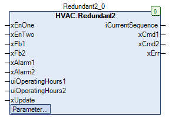

Redundant2 (FB)¶
FUNCTION_BLOCK Redundant2
Kurzbeschreibung¶
Redundante Steuerung von zwei gleichartigen GerätenEinflussfaktoren: Anforderungen, Betriebsstunden, Betriebs- und StörzuständeTypische Anwendung: Festlegung der Führungs- und Folgepumpe
Darstellung¶

Schnittstellen¶
Eingänge¶
Name Datentyp Wertebereich Initialwert Funktion xEnOne BOOL Anforderung - Führungsgerät xEnTwo BOOL Anforderung - Führungs- und Folgegerät xFb1 BOOL Betrieb - Gerät 1 xFb2 BOOL Betrieb - Gerät 2 xAlarm1 BOOL Störung - Gerät 1 xAlarm2 BOOL Störung - Gerät 2 uiOperatingHours1 UDINT Betriebsstunden - Gerät 1 uiOperatingHours2 UDINT Betriebsstunden - Gerät 2 xUpdate BOOL Eingang - Folgeschaltung nach Betriebsstunden
Ausgänge¶
Name Datentyp Wertebereich Initialwert Funktion iCurrentSequence INT Aktuelle Gerätefolge xCmd1 BOOL Freigabe - Gerät 1 xCmd2 BOOL Freigabe - Gerät 2 xErr BOOL Ausgang - Störung
Sollwerte / Parameter¶
Name Datentyp Wertebereich Initialwert Funktion xConOperatingHours BOOL TRUE Freigabe - Folgeschaltung nach Betriebsstunden xEnFb BOOL TRUE Freigabe - Verwendung der Betriebsmeldungen wTolerance WORD 100 Grenzwert - Betriebsstundendifferenz
Funktionsbeschreibung¶
Allgemeines¶
Anforderungen xEnOne und xEnTwo¶
xEnOne xEnTwo Führungsgerät Folgegerät Hinweis FALSE FALSE FALSE FALSE Keine Anforderung TRUE FALSE TRUE FALSE Anforderung - Führungsgerät X TRUE TRUE TRUE Anforderung - Führungs- und Folgegerät
Ausgang Störung xErr¶
xEnOne xEnTwo xAlarm1 xAlarm2 xErr Hinweis TRUE X TRUE TRUE TRUE Anforderung - Führungsgerät und beide Geräte gestört X TRUE TRUE X TRUE Anforderung - Führungs- und Folgegerät und mindestens ein Gerät gestört X TRUE X TRUE TRUE Anforderung - Führungs- und Folgegerät und mindestens ein Gerät gestört
Ausgang iCurrentSequence¶
Sollwert / Parameter xConOperatingHours¶
Sollwert / Parameter xEnFb¶
Sollwert / Parameter wTolerance¶
Bestimmung des Führungs- und des Folgegeräts¶
Umschaltung mit hoher Priorität in Abhängigkeit von den Störzuständen der Geräte 1 und 2
xAlarm1 xAlarm2 Führungsgerät Folgegerät Hinweis FALSE FALSE nicht beeinflusst nicht beeinflusst Beide Geräte ohne Störung TRUE FALSE Gerät 2 Gerät 1 Gerät 1 gestört X TRUE Gerät 1 Gerät 2 Gerät 2 gestört
Umschaltung mit niedriger Priorität in Abhängigkeit von den Betriebsstunden, Betriebsmeldungen ( xEnFb = TRUE ) und Freigabeausgänge ( xEnFb = FALSE ) der Geräte 1 und 2
Eine Neubewertung und -festlegung mit niedriger Priorität kann dabei jeweils wie folgt ausgelöst werden:
xConOperatingHours = TRUE und / oder ansteigende Flanke am Eingang xUpdate
xConOperatingHours xUpdate Bedingungen Führungsgerät FALSE FALSE, TRUE, H/L keine Neubewertung TRUE FALSE, TRUE, H/L gleiche Betriebsmeldungen ( xEnFb = TRUE ) oder gleiche Freigabeausgänge ( xEnFb = FALSE ) der Geräte Gerät mit geringerer Betriebstundenanzahl TRUE FALSE, TRUE, H/L Ein Gerät in Betrieb ( xEnFb = TRUE ) oder ein Gerät freigegeben ( xEnFb = FALSE ) Wechsel zum Gerät mit geringerer Betriebstundenanzahl, falls Betriebsstundendifferenz > wTolerance FALSE L/H uiOperatingHours1 = uiOperatingHours2 = 0 ( keine Betriebsstunden vorhanden ) Wechsel des Führungs- mit dem Folgegerät FALSE L/H uiOperatingHours1 oder uiOperatingHours2 > 0 Gerät mit geringerer Betriebstundenanzahl
Geräteausgänge xCmd1 und xCmd2¶
Die Geräteausgänge werden abschließend wie folgt festgelegt:
Führungsgerät = Gerät 1
xCmd1 = TRUE: Das Führungsgerät ist angefordert und mindestens ein Gerät ist angefordert und das Gerät 1 ist nicht gestört xCmd1 = FALSE: In allen übrigen Fällen
xCmd2 = TRUE: Das Folgegerät ist angefordert und mindestens ein Gerät ist angefordert und das Gerät 2 ist nicht gestört xCmd2 = FALSE: In allen übrigen Fällen
Führungsgerät = Gerät 2
xCmd1 = TRUE: Das Folgegerät ist angefordert und mindestens ein Gerät ist angefordert und das Gerät 1 ist nicht gestört xCmd1 = FALSE: In allen übrigen Fällen
xCmd2 = TRUE: Das Führungsgerät ist angefordert und mindestens ein Gerät ist angefordert und das Gerät 2 ist nicht gestört xCmd2 = FALSE: In allen übrigen Fällen
Visualisierung¶
Information¶
Element Autoren Datum Version Anmerkungen Funktion Adam Bartod 09.2016 1.0 Ursprungsversion Programmierung Adam Bartod 09.2016 1.0 Ursprungsversion Test Jochen Reu 10.2017 1.0 Ursprungsversion Dokumentation Jochen Reu 10.2017 1.0 Ursprungsversion
Codesys¶
- InOut:
Scope Name Type Initial Comment Input xEnOne BOOL Anforderung - Führungsgerät xEnTwo BOOL Anforderung - Führungs- / Folgegerät xFb1 BOOL Betrieb - Gerät 1 xFb2 BOOL Betrieb - Gerät 2 xAlarm1 BOOL Störung - Gerät 1 xAlarm2 BOOL Störung - Gerät 2 uiOperatingHours1 UDINT Betriebsstunden - Gerät 1 uiOperatingHours2 UDINT Betriebsstunden - Gerät 2 xUpdate BOOL Vergleich der Betriebsstunden bei Flanke xConOperatingHours BOOL TRUE Freigabe - kontinuierlicher Vergleich der Betriebsstunden xEnFb BOOL TRUE Verwendung von FALSE = Freigabe; TRUE = Betriebsmeldung wTolerance WORD 100 Grenzwert - Betriebsstundendifferenz für direkten Folgewechsel wenn nur ein Gerät in Betrieb ist Output iCurrentSequence INT Aktuelle Gerätefolge xCmd1 BOOL Freigabe - Gerät 1 xCmd2 BOOL Freigabe - Gerät 2 xErr BOOL Ausgang - Störung